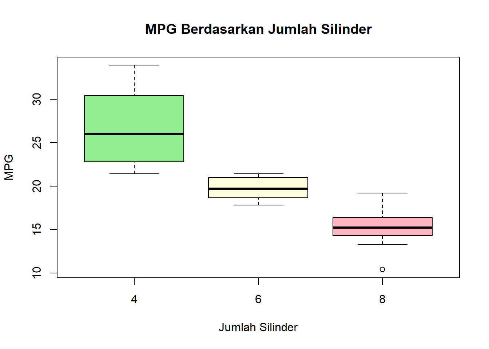

Setelah menyelesaikan modul ini, mahasiswa diharapkan mampu:
1. Melakukan Pengujian Hipotesis
Menerapkan uji ANOVA untuk membandingkan lebih dari dua populasi.
Melakukan uji Chi-Squared untuk goodness of fit dan independensi.
2. Memahami Korelasi dan Regresi Linear
Menghitung dan menginterpretasi koefisien korelasi Pearson.
Memvisualisasikan hubungan antar variabel dengan heatmap korelasi.
Membangun model regresi linear sederhana.
Menginterpretasi koefisien regresi dan mengevaluasi kualitas model.
3. Mengomunikasikan Hasil Analisis
Menggunakan Quarto untuk membuat laporan analisis.
Menulis dokumen dengan format Markdown.
Menyisipkan rumus matematis dengan LaTeX.
Menghasilkan laporan dalam berbagai format (HTML, PDF, DOCX).
Skenario: Riset Performa Kendaraan untuk Kebijakan Perusahaan 🚗📊
Selamat! Anda kini menjadi data analyst di sebuah perusahaan otomotif besar. Manajer Anda memberikan proyek penting: “Vehicle Performance Analysis”. Perusahaan sedang mempertimbangkan untuk mengubah kebijakan armada kendaraan mereka dan membutuhkan analisis mendalam tentang performa berbagai tipe kendaraan.
Anda diminta untuk:
Menguji hipotesis tentang perbedaan performa antar tipe kendaraan
Mengidentifikasi hubungan antar variabel performa
Membangung model regresi untuk melakukan prediksi sederhana
Menyajikan laporan profesional yang mudah dipahami stakeholder
Data yang Anda miliki adalah dataset mtcars yang berisi informasi 32 model mobil dengan berbagai spesifikasi seperti konsumsi bahan bakar (mpg), jumlah silinder (cyl), tenaga kuda (hp), berat (wt), dan lainnya.
Mari kita mulai perjalanan analisis ini dari konsep fundamental hingga komunikasi hasil!
Pengujian Hipotesis
Pada modul sebelumnya, kita sudah belajar mengenai uji hipotesis. Untuk review singkat, berikut adalah alur pada uji hipotesis:
Definisikan variabel dan tujuan uji
Tentukan hipotesis null (\(H_0\)) dan alternatif (\(H_1\))
Tentukan taraf signifikansi \(\alpha\) (biasanya 0.05)
Hitung statistik uji
Tentukan aturan penolakan (menggunakan nilai kritis atau p-value)
Ambil kesimpulan
Pada modul ini, kita akan membahas uji-uji yang lebih advanced, seperti uji ANOVA maupun uji Chi Square untuk hipotesis null yang lebih kompleks dibandingkan dengan sebelumnya.
3.4. ANOVA: Membandingkan Lebih dari Dua Kelompok
Bagaimana jika kita ingin membandingkan lebih dari dua kelompok? Misalnya, membandingkan MPG untuk mobil dengan 4, 6, dan 8 silinder? Kita menggunakan Analysis of Variance (ANOVA) untuk hal ini, karena kita membandingkan 3 populasi yakni mobil dengan 4, 6, dan 8 silinder.
Hipotesis:
\(H_0\): \(\mu_1 = \mu_2 = \mu_3\) (semua mean sama)
\(H_1\): Setidaknya satu mean berbeda
Ingat kembali Asumsi ANOVA:
Sampel independen
Populasi berdistribusi normal
Variansi populasi sama (homogenitas variansi)
R
# PENTING: Ubah cyl menjadi faktor terlebih dahulumtcars$cyl <-as.factor(mtcars$cyl)# Visualisasi awalboxplot(mpg ~ cyl, data = mtcars,main ="MPG Berdasarkan Jumlah Silinder",xlab ="Jumlah Silinder",ylab ="MPG",col =c("lightgreen", "lightyellow", "lightpink"))

# Statistik deskriptif per kelompokaggregate(mpg ~ cyl, data = mtcars, FUN =function(x) {c(mean =mean(x), sd =sd(x), n =length(x))})
if (p_value < alpha) {cat("Kesimpulan: Terdapat perbedaan signifikan rata-rata MPG antar kelompok silinder.\n")} else {cat("Kesimpulan: Tidak terdapat perbedaan signifikan rata-rata MPG antar kelompok silinder.\n")}
Kesimpulan: Terdapat perbedaan signifikan rata-rata MPG antar kelompok silinder.
3.4.1 (Pengayaan) Post-hoc test
Jika ANOVA menolak H0, sebenarnya ada uji lebih lanjut yang bisa kalian lakukan untuk mengetahui kelompok mana dengan mean berbeda. Uji ini dinamakan Post-hoc test. Karena uji ini diluar materi perkuliahan PSD, kalian bisa cari melalui internet untuk detail lebih lanjutnya.
Salah satu Post-hoc test adalah dengan Tukey HSD seperti pada kode berikut
# Frekuensi yang diharapkan jika dadu seimbangexpected_freq <-rep(120/6, 6)# Buat data framedf_dadu <-data.frame(Mata =1:6,Observasi =as.vector(obs_freq),Ekspektasi = expected_freq)print(df_dadu)
# Interpretasiif (chi_test$p.value <0.05) {cat("\nKesimpulan: Tipe transmisi dan jumlah silinder TIDAK independen (saling berhubungan)\n")} else {cat("\nKesimpulan: Tipe transmisi dan jumlah silinder independen (tidak berhubungan)\n")}
Kesimpulan: Tipe transmisi dan jumlah silinder TIDAK independen (saling berhubungan)
# Lihat expected frequenciescat("\nFrekuensi yang diharapkan:\n")
Korelasi Pearson mengukur keeratan hubungan linear antara dua variabel numerik. Nilainya berkisar dari -1 hingga +1: - r ≈ +1: korelasi positif sempurna - r ≈ 0: tidak ada korelasi linear - r ≈ -1: korelasi negatif sempurna
R
# Hitung matriks korelasi untuk semua variabel numerikcor_matrix <-cor(mtcars)print(round(cor_matrix, 2))
Interpretasi: - Variabel dengan korelasi tinggi (merah tua/biru tua) saling berhubungan erat - MPG berkorelasi negatif kuat dengan weight, displacement, dan cyl - Weight dan displacement berkorelasi positif sangat kuat
4.3. Regresi Linear Sederhana
Regresi linear digunakan untuk memodelkan hubungan antara variabel dependen (Y) dan variabel independen (X):
\[Y = \beta_0 + \beta_1 X + \varepsilon\]
di mana: - \(\beta_0\) = intercept (nilai Y ketika X = 0) - \(\beta_1\) = slope (perubahan Y untuk setiap kenaikan 1 unit X) - \(\varepsilon\) = error term
Studi Kasus: Memprediksi weight berdasarkan displacement
R
# Bangun model regresimodel <-lm(wt ~ disp, data = mtcars)# Lihat ringkasan modelsummary(model)
Call:
lm(formula = wt ~ disp, data = mtcars)
Residuals:
Min 1Q Median 3Q Max
-0.89044 -0.29775 -0.00684 0.33428 0.66525
Coefficients:
Estimate Std. Error t value Pr(>|t|)
(Intercept) 1.5998146 0.1729964 9.248 2.74e-10 ***
disp 0.0070103 0.0006629 10.576 1.22e-11 ***
---
Signif. codes: 0 '***' 0.001 '**' 0.01 '*' 0.05 '.' 0.1 ' ' 1
Residual standard error: 0.4574 on 30 degrees of freedom
Multiple R-squared: 0.7885, Adjusted R-squared: 0.7815
F-statistic: 111.8 on 1 and 30 DF, p-value: 1.222e-11
Sebagai data analyst profesional, kemampuan mengomunikasikan hasil sama pentingnya dengan kemampuan analisis. Quarto adalah tools modern untuk membuat laporan analisis yang interaktif dan profesional.
---title: "Laporan Analisis Performa Kendaraan"author: "Nama Anda"date: "2025-11-09"format: html: toc: true toc-depth: 2 code-fold: true theme: cosmo---## PendahuluanLaporan ini menyajikan analisis komprehensif tentang...## Metodologi### DataDataset yang digunakan adalah `mtcars` yang berisi...### AnalisisAnalisis dilakukan menggunakan R dengan pendekatan...
5.2. Pengantar Markdown
Markdown adalah bahasa markup sederhana untuk formatting teks:
# Heading Level 1## Heading Level 2### Heading Level 3**Teks tebal (bold)***Teks miring (italic)****Teks tebal dan miring***- Item list 1- Item list 2 - Sub-item 2.1 - Sub-item 2.21. Item bernomor 12. Item bernomor 23. Item bernomor 3[Link ke website](https://www.example.com)> Ini adalah blockquote> untuk kutipan atau catatan penting| Kolom 1 | Kolom 2 | Kolom 3 ||---------|---------|---------|| Data 1 | Data 2 | Data 3 || Data 4 | Data 5 | Data 6 |`kode inline` untuk menyebut fungsi atau variabel```kode blokuntuk menulis kode
5.3. Pengantar LaTeX untuk Rumus
LaTeX memungkinkan Anda menulis rumus matematis dengan rapi:
Inline math (di dalam kalimat):
Rata-rata dihitung dengan rumus $\bar{x} = \frac{1}{n}\sum_{i=1}^{n}x_i$
Hasil: Rata-rata dihitung dengan rumus \(\bar{x} = \frac{1}{n}\sum_{i=1}^{n}x_i\)
---title: "Analisis Performa Kendaraan: Dataset mtcars"author: "Data Analyst Tim"date: "2026-11-23"format: html: toc: true toc-depth: 3 code-fold: show code-tools: true theme: cosmo highlight-style: github---## Executive SummaryLaporan ini menyajikan analisis komprehensif terhadap performa 32 model kendaraan menggunakan dataset `mtcars`. Analisis mencakup statistik deskriptif, pengujian hipotesis, dan pemodelan regresi untuk mengidentifikasi faktor-faktor yang mempengaruhi konsumsi bahan bakar.**Temuan Utama:**1. Mobil manual memiliki rata-rata MPG **lebih tinggi** dibanding automatic (signifikan, p < 0.001)2. Terdapat korelasi **negatif kuat** antara weight dan MPG (r = -0.87)3. Model regresi dapat menjelaskan **78.9%** variansi weight dari displacement## Metodologi### DataDataset `mtcars` berisi 32 observasi dengan 11 variabel:```{r}#| echo: falsedata(mtcars)str(mtcars)```### Analisis StatistikAnalisis dilakukan dengan R versi 4.4.1 menggunakan pendekatan inferensia statistik:- **Statistik Deskriptif**: mean, median, standar deviasi- **Uji Hipotesis**: t-test, ANOVA (α = 0.05)- **Korelasi**: Pearson correlation- **Regresi**: Simple Linear Regression## Hasil Analisis### Perbandingan MPG: Automatic vs Manual```{r}#| warning: false#| fig-cap: "Distribusi MPG berdasarkan tipe transmisi"boxplot(mpg ~ am, data = mtcars, names = c("Automatic", "Manual"), col = c("lightcoral", "lightblue"), main = "Perbandingan MPG", ylab = "Miles per Gallon")# Uji tt_result <- t.test(mpg ~ am, data = mtcars)print(t_result)```Hasil uji t menunjukkan perbedaan signifikan (p-value < 0.05).Mobil manual memiliki rata-rata MPG yang lebih tinggi dibandingkan dengan mobil automatic.### Model RegresiModel regresi untuk memprediksi weight dari displacement:$\text{Weight} = \beta_0 + \beta_1 \times \text{Displacement} + \varepsilon$```{r}model <- lm(wt ~ disp, data = mtcars)summary(model)```Persamaan regresi yang diperoleh:$\widehat{\text{Weight}} = 1.6 + 0.00701 \times \text{Displacement}$dengan $R^2 = 0.789$.## Kesimpulan dan Rekomendasi1. **Kesimpulan Utama**: Tipe transmisi dan karakteristik mesin (displacement, weight) memiliki pengaruh signifikan terhadap efisiensi bahan bakar.2. **Rekomendasi**: - Untuk efisiensi bahan bakar, prioritaskan kendaraan dengan transmisi manual - Pertimbangkan trade-off antara tenaga mesin (displacement) dan konsumsi bahan bakar - Optimalkan weight kendaraan untuk meningkatkan MPG## ReferensiHenderson and Velleman (1981). Building multiple regression models interactively. *Biometrics*, 37, 391–411.
Kesimpulan
Selamat! Anda telah menyelesaikan modul yang sangat komprehensif tentang inferensia statistik. Mari kita rangkum perjalanan Anda:
Apa yang Telah Anda Pelajari
Pengujian Hipotesis: Anda dapat membuat klaim tentang populasi dan mengujinya secara objektif menggunakan data sampel.
Korelasi dan Regresi: Anda dapat mengidentifikasi hubungan antar variabel dan membangun model prediktif untuk pengambilan keputusan.
Komunikasi Hasil: Anda dapat menyajikan analisis kompleks dalam format yang profesional dan mudah dipahami menggunakan Quarto, Markdown, dan LaTeX.
Mengapa Ini Penting?
Sebagai data analyst, Anda tidak hanya mengolah angka. Anda: - Mengubah data menjadi insight - Membuat keputusan berbasis bukti - Mengomunikasikan temuan ke stakeholder - Memberikan rekomendasi yang actionable
Keterampilan yang Anda pelajari di modul ini adalah fondasi untuk karir di bidang data science, business analytics, research, dan banyak bidang lainnya.
Latihan (Opsional)
Untuk memperdalam pemahaman Anda, cobalah eksplorasi sederhana berikut dengan dataset mtcars:
1. Eksplorasi Dasar
Pilih satu variabel numerik (misalnya hp, mpg, atau wt), lalu: - Hitung mean, median, dan standar deviasinya - Buat visualisasi (histogram atau boxplot) - Buat interval kepercayaan 95% untuk mean-nya
2. Perbandingan Dua Kelompok
Pilih satu variabel kategorik (misalnya am untuk transmisi atau cyl untuk jumlah silinder), lalu: - Bandingkan mean dari variabel numerik antar kelompok - Lakukan uji t untuk melihat apakah perbedaannya signifikan - Buat visualisasi perbandingan (misalnya boxplot berdampingan)
3. Hubungan Antar Variabel
Pilih dua variabel numerik yang menurut Anda mungkin berhubungan
Hitung korelasi Pearson
Buat scatter plot dengan garis regresi
Bangun model regresi sederhana dan interpretasikan hasilnya
4. Laporan Sederhana (Opsional)
Jika Anda ingin berlatih membuat laporan dengan Quarto: - Buat file .qmd baru - Tuliskan hasil eksplorasi Anda dengan format Markdown - Sisipkan kode R dan visualisasi - Render ke HTML atau PDF
Catatan: Ini hanya latihan mandiri untuk memperdalam pemahaman. Tidak ada submission atau penilaian formal. Lakukan sesuai dengan kecepatan belajar Anda sendiri!